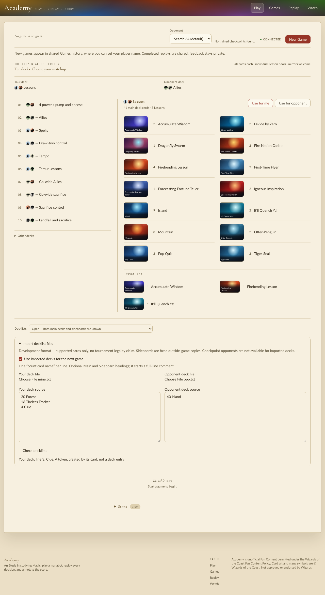
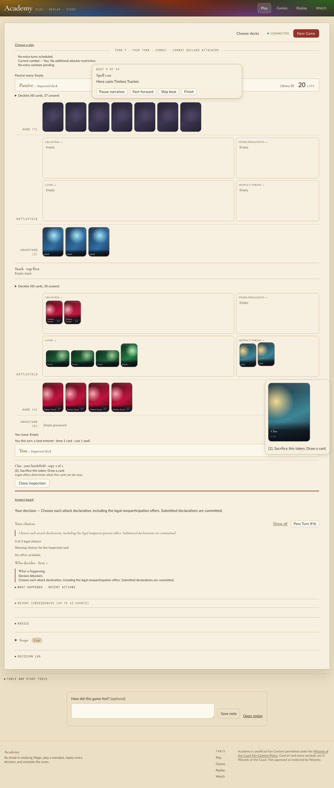

On aef531540 (level with origin/main a343904ee). The installed extension had been built before the merge of main, so I rebuilt it in release (maturin, cp313) and replaced it atomically before running anything below.
managym.catalog_tokens()I loaded the engine and read the catalog. It has 462 rows. 453 carry a key, and 16 of those are token.* rows (Ally, Ballistic Boulder, Bear, Clue, Dragon, Elf Warrior, Food, Human, Human Soldier, Koma's Coil, Marit Lage, Monk, Powerstone, Soldier, Spirit, Treasure). The 9 keyless rows are back faces. The content digest is 9508c560…, which matches the pins in the Academy fixtures and the authored-match receipt.
Through managym.admit_decklists, I submitted lists with 4 Treasure, 4 Ally, 4 Marit Lage, and 1 Clue in the sideboard. Each one was refused with a reason, while a valid list (Mountain/Island/Lightning Bolt) was admitted.
treasure REJECTED: deck.txt:3: Treasure: A token, created by its card; not a deck entry side REJECTED: deck.txt:6: Clue: A token, created by its card; not a deck entry unknown REJECTED: deck.txt:3: Unknown card name: Zzyzx Not A Card. ok ADMITTED (… "name":"Mountain","card_def_id":267,"key":"lea.mountain" …)
In Academy (./scripts/play --port 8298 --frontend-port 5298, driven headlessly with Playwright), I imported "20 Forest / 16 Tireless Tracker / 4 Clue". The import form shows the same reason under the source:

I imported 24 Forest + 16 Tireless Tracker against 40 Island, chose the passive opponent and pressed New Game. Then I played lands and cast Trackers until a land triggered the Tracker. The trigger offers read "Create 1 Clue token". After they resolved, two Clue tokens were in the "Artifact tokens" zone with their own art. Inspecting one shows "{2}, Sacrifice this token: Draw a card."

Nothing in the change needed fixing.
key: not run. tests/semantic covers binding, according to the earlier record.curated_pack identities are keyed by printed name with a card/token kind, so one pack cannot hold a card and a token of the same name.